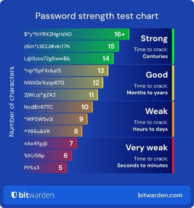

Prevencia
Prevencia

Definícia : prijanie predbežných opatrení znižujúce vznik bezpečnostných incidentov,
Medzi základné preventívne opatrenia patria:
- Kvalita hesla
- Vytvorte dlhé a zložité heslo, ktoré má aspoň 12 znakov.
- Používajte symboly, číslice, veľké a malé písmená a špeciálne znaky
- Každé heslo, ktoré vytvoríte, musí byť odlišné.
- Heslo musí byť odolné slovníkovému útoku .
- Nepouživať jednoduché alebo často používané heslá (napr. AKO 123456 QWERTY123...)
- Použivanie antivirusových programov
-program pôvodne označoval softvér, ktorý slúžil na zachytávanie a niekedy aj odstraňovanie počítačových vírusov z infikovaných zariadení
- Používanie VPN (Virtual Protocol Network)
- Pravidelne aktualizácie
- pouzivanie firewall
- pristupové práva
späť